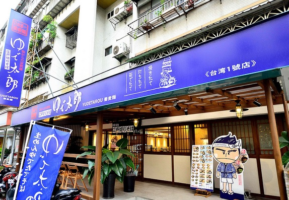

夏日炎炎，正餐常會想吃冰冰涼涼的東西，
很久以前就想找台北的蕎麥麵店，不過每次搜尋結果都是巷口的便利商店，
終於這次讓我發現了這家ゆで太郎（YUDETAROU）蕎麥麵了阿！！
ゆで太郎蕎麥麵
地址：台北市仁愛路四段266巷15弄4號
營業時間：11:00～22:00(年中無休)
電話：(02)2708-0930

是的，馬上下一段人就來到了現場，ゆで太郎在日本各地有多家連鎖店，
台灣似乎是海外第一個據點，第一家海外分店設在台北仁愛路國泰醫院的後方，
還在想為什麼要選這個地方設點的時候，馬上就被扛棒上寫的「自家製麵」吸引而放棄思考了，
曾幾何時好像只要打上「自家製麵」這幾個字後，瞬間安心度、美味度 UP TO SKY的感覺，
麥當勞應該也要標個「自家製堡」之類，哈哈（好無聊）。
我真的覺得這間店是為了夏天而開的，店內乾淨明亮的設計，桌椅陳設簡單清爽，一進來心就涼了（？）。
點了蕎麥麵和炸蝦，桌上有店家貼心提示的蕎麥麵3種幸福吃法：
原來如此。
通常我從便利商店買來的第一步都是先跟「麵團」搏鬥一陣後才能將麵條理順，
有次跟涼麵搏鬥筷子還斷成兩半這樣。
其實日本的沾麵我個人覺得一次吃多其實會膩，所以醬汁的味道、麵的份量兩者的組合拿捏很重要，
ゆで太郎的醬麵比例抓得剛好，膩之前就吃完了，吃完也不會有太飽的感覺，整個走一個清爽無負擔的路線。
提供給大家夏日好選擇喔！